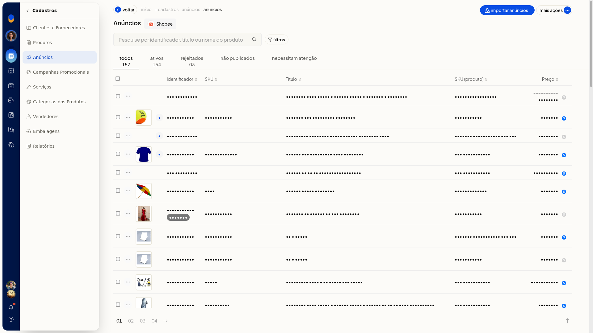
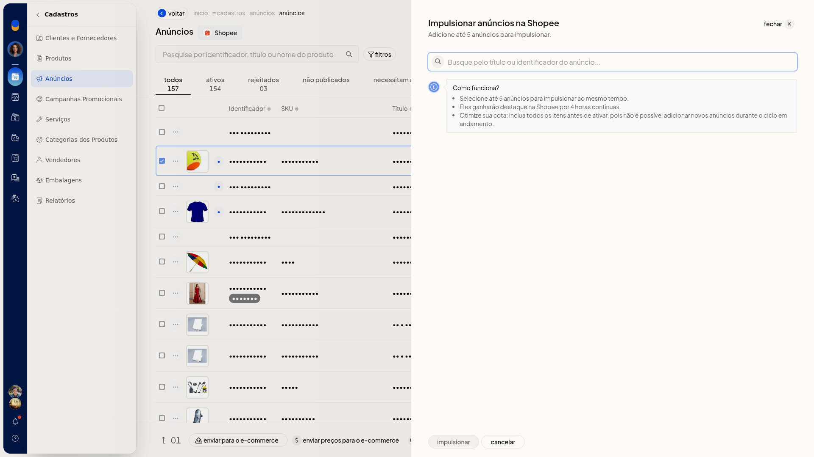

Shopee: impulsionar anúncios
Pré-requisitos
- Integração com a Shopee já conectada.
- Anúncios já publicados na Shopee.
Importante
- Selecione até 5 anúncios ao mesmo tempo.
- O destaque dura 4 horas contínuas.
- Não é possível incluir novos anúncios enquanto um ciclo estiver em andamento.
- Inclua todos os anúncios desejados antes de ativar, para otimizar a cota.
- O limite é de 5 anúncios por loja.
Instruções
Pelo menu de contexto
-
Acesse Cadastros > Anúncios.
-
No card Shopee, clique em gerenciar.
-
Na linha do anúncio, abra o menu de contexto.
-
Clique em Impulsionar na Shopee. O destaque desse anúncio é enviado direto.

Por Mais ações
-
Acesse Cadastros > Anúncios.
-
No card Shopee, clique em gerenciar.

-
Na lista de anúncios, clique em Mais ações.

-
Clique em Impulsionar anúncios.


-
Para localizar um anúncio, digite o título ou o identificador em Busque pelo título ou identificador do anúncio.
-
Marque os anúncios no painel Impulsionar anúncios na Shopee.
-
Clique em impulsionar. Os anúncios marcados recebem destaque por 4 horas contínuas.

Em lote pela lista
- Acesse Cadastros > Anúncios.
- No card Shopee, clique em gerenciar.
- Na lista, marque até 5 anúncios.
- Clique em Mais ações e depois em Impulsionar anúncios.
- Confira a seleção no painel Impulsionar anúncios na Shopee.
- Clique em impulsionar. Os anúncios marcados recebem destaque por 4 horas contínuas.
Informações adicionais
A cota se renova depois das 4 horas
Depois das 4 horas, a cota de até 5 anúncios por loja pode ser usada de novo.